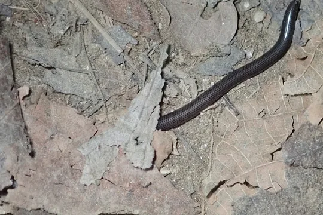
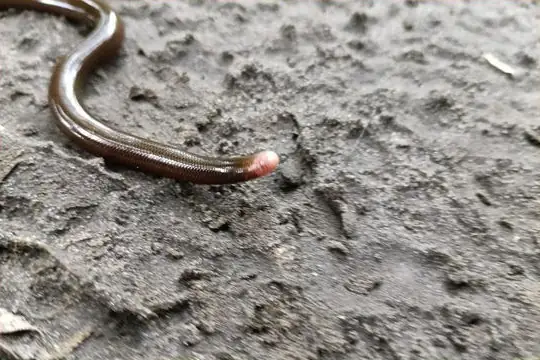
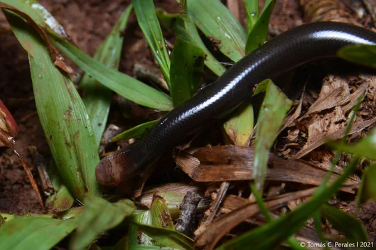
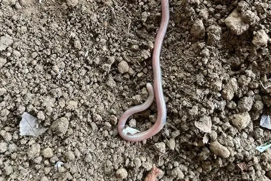
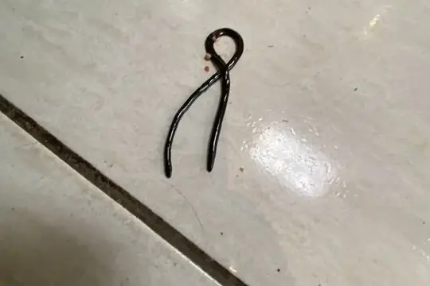
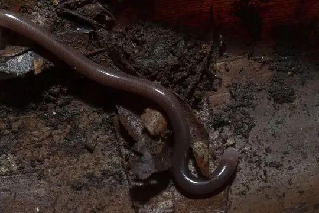
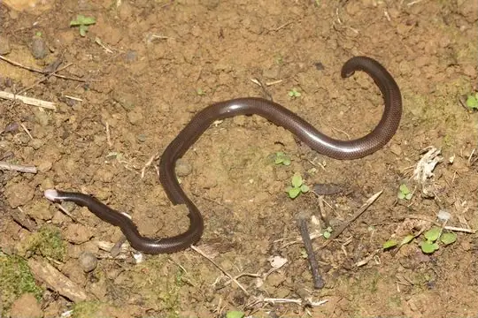
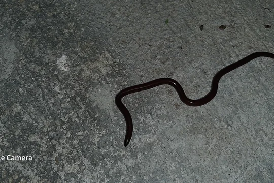
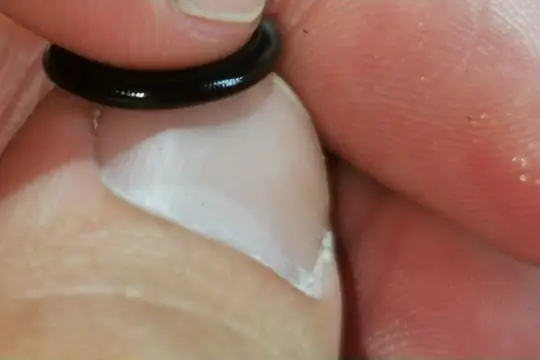
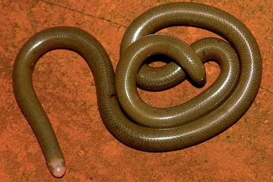

Anomalepididae
The family Anomalepididae (early blind snakes) has 22 living species in SnakeList (none venomous), in 4 genera.
- 22living species
- 22non-venomous
- 4genera
About the family
Small burrowing blind snakes found only in the tropics of the Americas, in southern Central America and central and northern South America. Very little is known about their diet or way of life.[1,2]
Sources for this introduction
- Early Blindsnakes (Anomalepididae). Grzimek's Animal Life Encyclopedia, via Encyclopedia.com.
- Scolecophidia. Wikipedia.
Information last reviewed 9 November 2026.
Species
Showing 22 species
- No photo yetAlagoas Blind SnakeLiotyphlops trefauti

Bonda Blind SnakeLiotyphlops bondensis- No photo yetColombian Blind SnakeAnomalepis colombia

Cope's Blind SnakeLiotyphlops anops
Costa Rica Blind SnakeHelminthophis frontalis- No photo yetCundinamarca Blind SnakeLiotyphlops argaleus
- No photo yetEcuador Blind SnakeAnomalepis flavapices

Mexican Blind SnakeAnomalepis mexicana- No photo yetPalau's Blind SnakeLiotyphlops palauophis
- No photo yetPreocular Blind SnakeHelminthophis praeocularis

Sao Paulo Blind SnakeLiotyphlops schubarti- No photo yetSouthern Colombian Blind SnakeLiotyphlops haadi

São Sebastião Blind SnakeLiotyphlops caissara- No photo yetTaylor's Mato Grosso Blind SnakeLiotyphlops taylori
- No photo yetTaylor's Peru Blind SnakeAnomalepis aspinosus
 Ternetz's Blind SnakeLiotyphlops ternetzii
Ternetz's Blind SnakeLiotyphlops ternetzii
Trinidad Blind SnakeTyphlophis squamosus
Whitenose Blind SnakeLiotyphlops albirostris
Wilder's Blind SnakeLiotyphlops wilderi- No photo yetYellowtail Blind SnakeHelminthophis flavoterminatus

Liotyphlops beui- No photo yetLiotyphlops sousai
No snakes in Anomalepididae match.
About the family Anomalepididae
- Distribution: living species recorded in 14 countries (+1 territory), on 2 continents: North America, South America.
- Genera: Liotyphlops 14, Anomalepis 4, Helminthophis 3, Typhlophis 1.